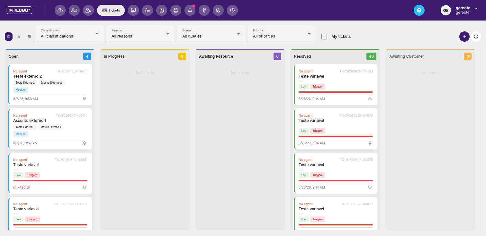

Tickets (Mesa de Ajuda)
Organize solicitações de suporte em um quadro Kanban por status, com filtros por fila, prioridade e motivo.

1. Visão geral
O módulo Tickets é a mesa de ajuda (helpdesk) da plataforma. Cada solicitação vira um “ticket” que trafega por colunas de status até ser resolvido.
2. Filtros
No topo, refine a visualização antes de atuar:
| Filtro | Descrição |
|---|---|
| Classifications (All classifications) | Filtra por classificação do ticket. |
| Reason (All reasons) | Filtra por motivo da solicitação. |
| Queue (All queues) | Filtra por fila responsável. |
| Priority (All priorities) | Filtra por prioridade (ex.: Low, Medium). |
| My tickets | Mostra apenas os tickets atribuídos a você. |
3. Colunas de status (Kanban)
Os tickets são organizados em colunas, cada uma com contador próprio:
- Open (Azul) — tickets abertos.
- In Progress (Amarelo) — em andamento.
- Awaiting Resource (Roxo) — aguardando recurso.
- Resolved (Verde) — resolvidos.
- Awaiting Customer (Laranja) — aguardando cliente.
4. Cartões de ticket
Cada cartão traz informações rápidas para triagem:
- Agente: “No agent” quando não atribuído.
- ID: código do ticket (ex.: TK-20260807-05115).
- Título: assunto da solicitação.
- Tags: rótulos como motivo, prioridade (Low/Medium) e triagem.
- Data/hora e, quando aplicável, barra de progresso/SLA.
- Tempo decorrido: relógio com tempo aberto (ex.: “-42d 5h” em tickets antigos).
5. Criando e acompanhando
- Use o botão + (roxo) para abrir um novo ticket.
- Aplique filtros para separar o que é sua responsabilidade (“My tickets”).
- Arraste ou mova o ticket entre colunas conforme o andamento.
- Use o ícone de engrenagem no cartão para ações específicas do ticket.
Observado no ambiente: no exemplo capturado, havia 4 tickets Open e 46 Resolved, evidenciando um histórico de atendimentos já finalizados.